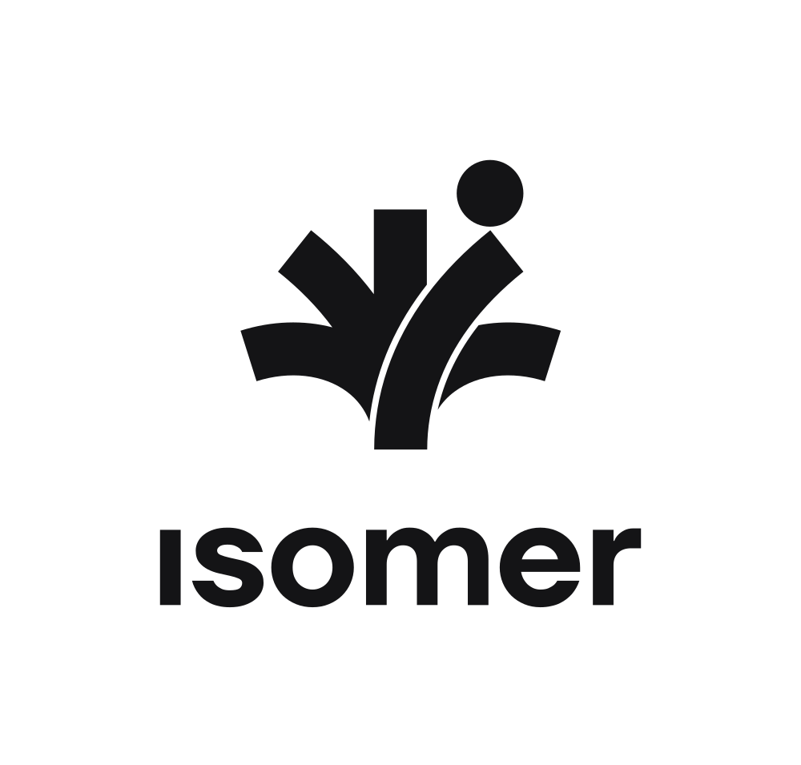
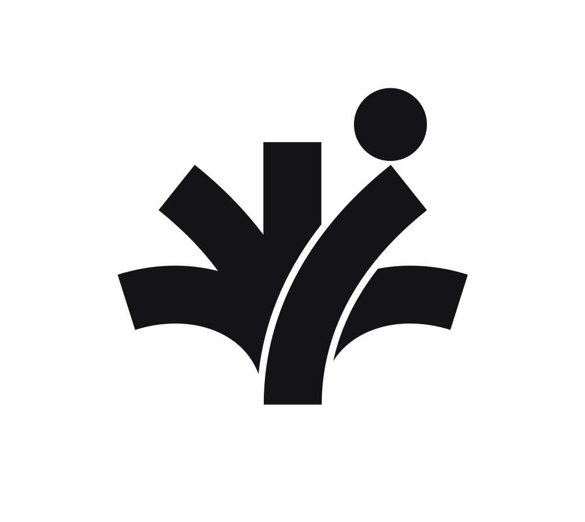

Black and white logos for the Copper Verdigris palette, each shown on the ground it's made for. Every file has a transparent background, so the white logos can look blank until they're on a dark ground. Download one file at a time: SVG for screens and anything that scales, PNG where SVG isn't accepted.
The default. Mastheads, slide corners, email headers, the site.
isomer-logo-horiz-ink

isomer-logo-horiz-white
Square and tall slots: covers, event signage, merchandise.

isomer-logo-vert-ink

isomer-logo-vert-white
Small and square: app icon, favicon, avatar, slide footers.

isomer-logomark-ink

isomer-logomark-white